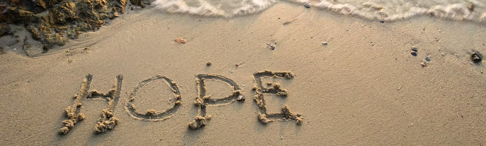
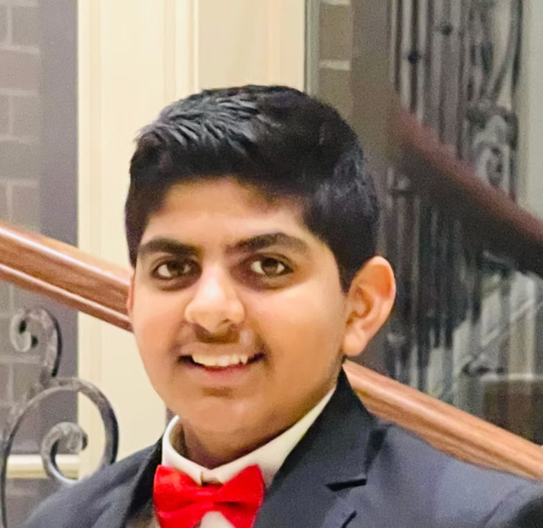
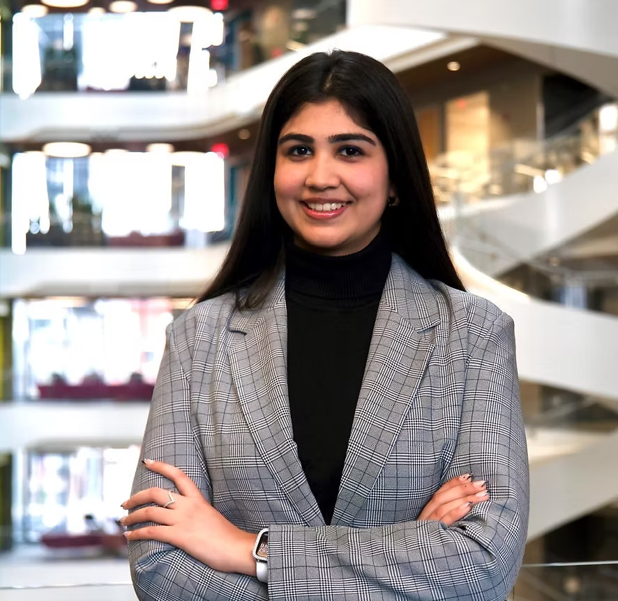

Built to listen. Designed to learn. Committed to lasting change.
The Soni Family Foundation is a Dallas-based nonprofit investing in community-informed, evidence-based programs that expand opportunity for young people.
A family foundation with a local focus.
We collaborate with schools and nonprofits to support learning, wellness, and pilot programs that strengthen outcomes for students and families.
In 2025, SFF received official 501(c)(3) status. Our mission is simple: listen closely, support what works, and help promising solutions grow.

Grounded in community
Community-informed
We start by listening to educators, families, students, and organizations closest to the work.
Evidence-based
We prioritize practical approaches, define outcomes, and use feedback to improve.
Built to scale
We pilot thoughtfully and expand initiatives that demonstrate meaningful impact.
Meet the team
Family members and leaders united by a shared commitment to service and educational opportunity.

Paramjeet Soni
President & Co-CEO

Arav Soni
Founder & Co-CEO

Manmeet Soni
Treasurer

Ekaum Soni
Secretary

Ravneet Kaur
Chief Technology Officer